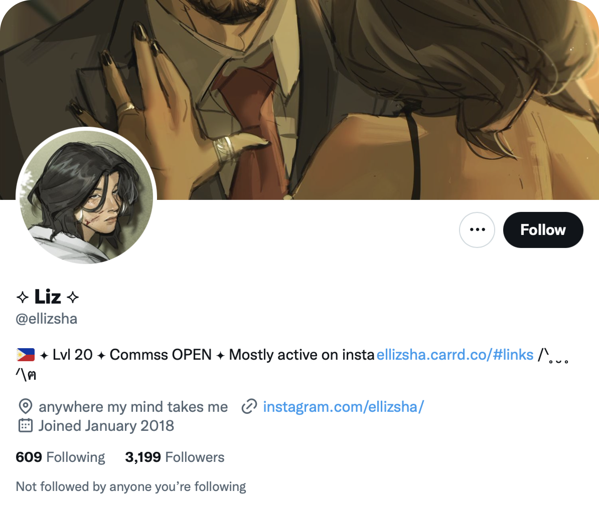

Avatar 2,
analyzed trough Twitter.
by Gianluca Andrisani
After "Avatar" was released in 2009, it quickly became a global success, not only for its stunning CGI and technological advancement, using cutting-edge techniques like motion capture and 3D animation, that make technology advance and did in fact lead the team to win the Oscar for Special Effects, but also for its mythological narrative drawing inspiration from both mankind and the natural world and tackling the topics of natural occupation and human oppression.
The first movie's sequel, "Avatar: The Way of Water," was released by James Cameron, and given the success of that film, we can confidently say that the Avatar series is still on track to become a huge hit, maintaining its legacy over time and generating enormous global fandom, as evidenced by its gross receipts, which have already exceeded 1.7 billion dollars at the box office in just the first three weeks.
The analysis of "Avatar: The Way of Water" was chosen for this report because of its technological innovation and the ground-breaking technological techniques that were used to produce it. I tried to determine if it was a hot topic on Twitter and because of the global fandom that the series had been able to develop, involving people from all over the world and speaking many different languages. It was also relevant to determine how much interest there would be in the sequel.
In order to understand what people were writing and saying about "Avatar: The Way of Water," I looked at user behaviour through an examination of twitter. Using the Google Sheets TAGS application, I went through the process of collecting data from Twitter users who had included the hashtag #avatar2 in their tweets.
18,255 tweets collected from 31/12/22 to 8/01/23.
Retweets account for 70% of the entire dataset in the data collected from Twitter, making it clear that most users have a tendency to rebroadcast certain popular messages. Nevertheless, the sheer number of bots designed to tweet or retweet about #avatar2 has made it exceedingly difficult to clear the data.
No matter if they were tweeting or retweeting content, I initially gathered the top 10 most active people in the sample to better understand general movements and remove as many bots as possible. This specific data cleaning operation was not at all simple; in fact, just 33,3% of the sample of the first 30 accounts turned out to be actual users.
After identifying the users who were generally the most active, I determined who the top tweeters and
retweeters were on
the subject, going through a fresh data cleaning procedure for the users who weren't included in the prior
ranking.
There were a tonne of programmed bots among the top tweeters; in fact, 75% of the people in the sample were
bots,
leaving us with only 25% of actual tweeters. In the study, I mentioned the risk posed by those bots, who
were advertising
the avatar movie's free streaming version and rerouting viewers to various Reddit links that might be risky
to open and
easily trick consumers into falling for scams.
The situation with the top retweeters, however, is much different; in reality, it is more balanced. In the sample, 50% of the users were bots who continued to retweet about risky links for the movie's free streaming. However, the true retweeters were those sincere and devoted fans of the story who shared just their favourite and hand-picked tweets regarding the film. In the case of the Retweeters, the majority of them were really interested on sharing their favourite fan art in their feed.
I WANNA BE SAVED iykyk 🙈 Was able to watch Avatar 1 again all I can say is...Jake Sully 🫡#Avatar2 #AvatarTheWayOfTheWater #JakeSully pic.twitter.com/fftV8cvzDc
— ⟡ Liz ⟡ (@ellizsha) January 2, 2023
#Avatar2
— 쥐 (@dirtybigrat) January 5, 2023
냥글냥글 모여서 자는 애들... pic.twitter.com/Q3lo2jjInW
As we can see, most of the most-retweeted articles are related to fandom building and fandom itself. Users share their favourite fan art and posts, engage other users, and provide users with content that they truly like and are willing to share with their followers.
The most-retweeted post was published by illustrator and artist @ellizsha, who says she isn't as active on Twitter as she is on Instagram but still managed to gain 988 retweets for her artwork. She gained followers by creating fan art and interacting with her audience.
Because the dataset was so large, it was less likely that the top tweeters and retweeters couldn't actually affect how the data trended. Starting from the total sum of 18,255 tweets, 12,745 retweets have actually been gathered, of which 243 are from the top retweeters. Of the 5510 tweets, 98 come from the top tweeters.
In the entire dataset, the majority of users stated their location in their profiles, though rarely
with any specificity. Instead, they would often use snappy phrases or emojis to indicate their
location, sometimes including the name or flag of the country they were.
However, users still want to use that text area to provide more information about themselves. In
fact, 81% of those profiles are marked as being located, compared to just 0.1% of those that are
actually geolocated. This means that almost all users declined to provide Twitter with their exact
location, indicating that most users are aware of the risks associated with sharing data with
businesses. Instead, 19% of users didn't publish their locations at all.
After analysing each of the collected unique tweets, I performed a textural analysis to determine which terms were used the most and why.
Of course, there are some terms we encounter, such Avatar and Avatar 2, and it is obvious that "#JamesCameron" was also a well-known term.
The director of the Avatar series, James Cameron, is currently revolutionising both the film industry and the technology associated with it. In fact, he is well known for the custom cameras and rigs that he either designed or had designed for himself, which were made possible through highly specialised collaboration with major corporations like Sony. Pioneer of CGI, who altered its trajectory and highlighted its significance when the technology was still not as advanced as it is today. Exceptionally imaginative and visionary individual with the power to have an impact on both the IT and film industries.
Avatar (2009)
— every avatar frame in order (@AvatarInFrame) January 3, 2023
Frame 10151 of 245854
Time 00:07:21 of 02:58:09#Avatar #Avatar2 #AvatarTheWayOfWater #JamesCameron pic.twitter.com/3QXIMOCLQG
“02:58:09” and “245854”, these numbers in the word cloud might appear to be randomly appearing, but they actually correspond to some specific movie moment. These numbers were generated by an automated bot that posts each frame from avatar movies starting from the 2009 one, a popular world on the world cloud. Every thirty minutes, this bot posts six movie frames, greatly influencing the textural analysis.
In addition to the praise for the filmmaker and the anticipation over the movie's box office results, it is clear that the calibre of the "3D" visuals produced for the production is also valued, resulting in good comments and articles.
"Box" is one of the terms that stands out. The majority of the people were commenting and sharing news about the outstanding earning related to the movie and its success globally. This word is actually related to the gross income of the movie through its box office.
I performed a demographic analysis to learn more about the people who offered their opinions and thoughts on the film, as well as to identify any influencers, micro-influencers, publications, or businesses.
10,419 users made up the whole sample population; the majority of them have smaller accounts with fewer than 1,000 followers, and some of them may even have fewer than 100 followers, indicating that they may be new users or automated bots. Although there are still some individuals who have more than 1,000 followers, and the number may even reach 10,000, this suggests that the majority of them are likely to be real users who joined the platform in the past.
When it comes to the population of accounts belonging to micro influencers that have between 10,000 and 100,000 followers, we can observe how the number of users rapidly drops. Going below the 100 account, talking about some legitimate influencers with more than 100,000 followers, may indicate that the franchise didn't employ influencer marketing as an advertisement method to promote the film. For accounts with more than one million followers, the number falls below fifty; the majority of these accounts share pieces from international media and film magazines about the film.
The graph's time range is from December 31 to January 8 and it analyses the publication patterns of the people who posted about #avatar2.
The chart shows that the average movement is between 50 and 150 tweets per hour, with fewer peaks occurring above 150 tweets per hour, especially on the 2nd and 6th of January. The average tweet rate is 109 per hour, which is also evident in the cart.
The most postings are made about 2 AM on January 3rd, and the most of them are about box office news, with people talking about and sharing information about the movie Avatar's box office performance as well as updates on the many most popular movie lists showing #avatar2 at the first positions yet.
An extensive amount of data from tweets and retweets on Twitter was collected as part of this investigation in order to better understand how users around the world were behaving in relation to the #avatar2 topic. Some pertinent observations were made, such as the topic's popularity, which led to a tendency of more than 100 posts per hour over the course of the entire time period.
Not just the most devoted fans wrote about the movie; there was also a lot of praise for the technological sophistication used behind the scenes and the calibre of the final visuals. The movie inspired an incredible wave of fandom on Twitter, tempting many users to post fan-art related to Avatar 2 or to repost their favourite fandom content. Because of the original movie's phenomenal success, there are now many expectations for the follow-up; in fact, news of the movie's box office receipts generated a lot of curiosity, sparking a global word-of-mouth campaign that attracted the attention of the majority of users.